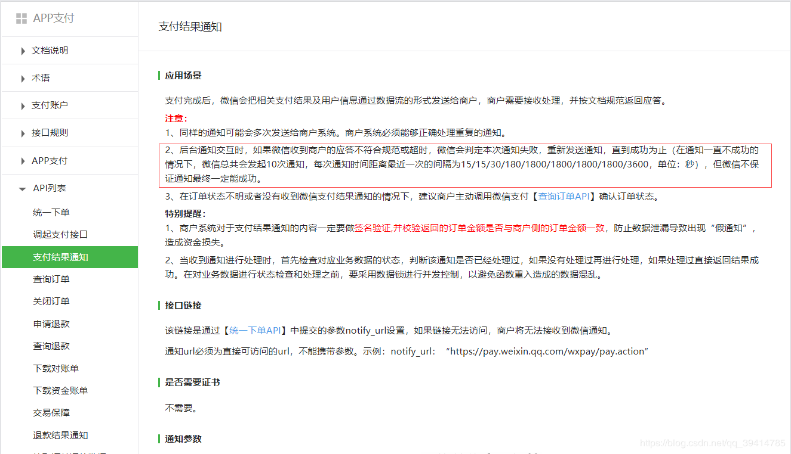
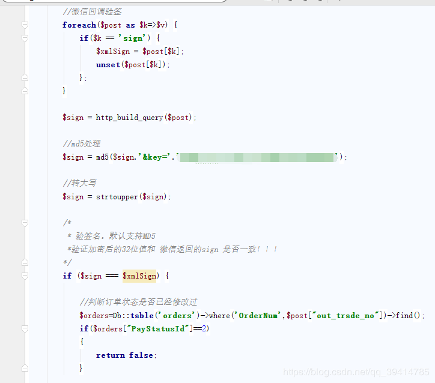
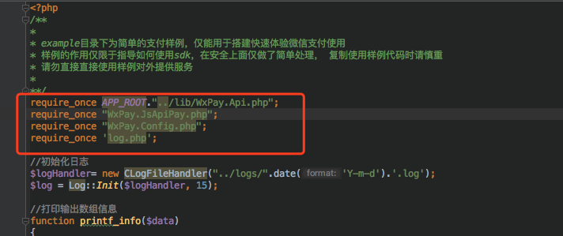
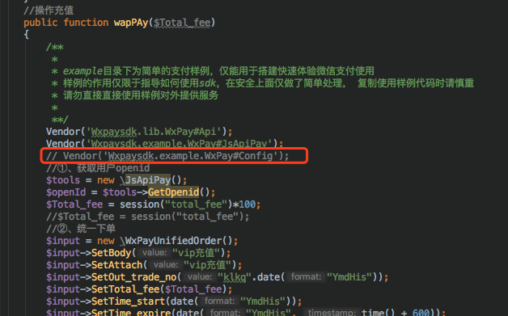
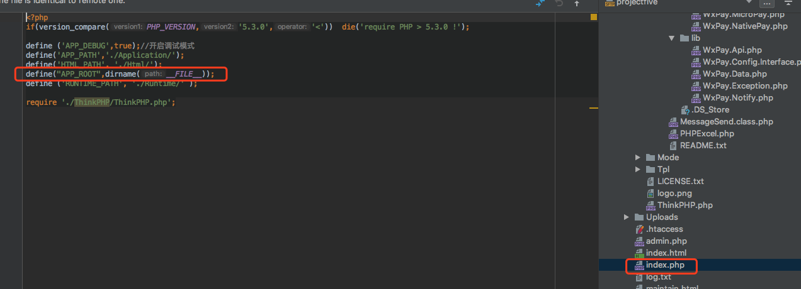
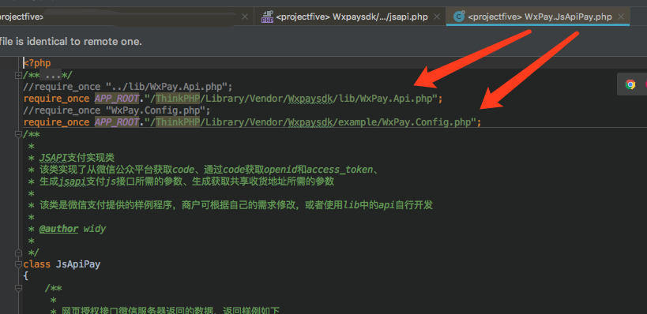
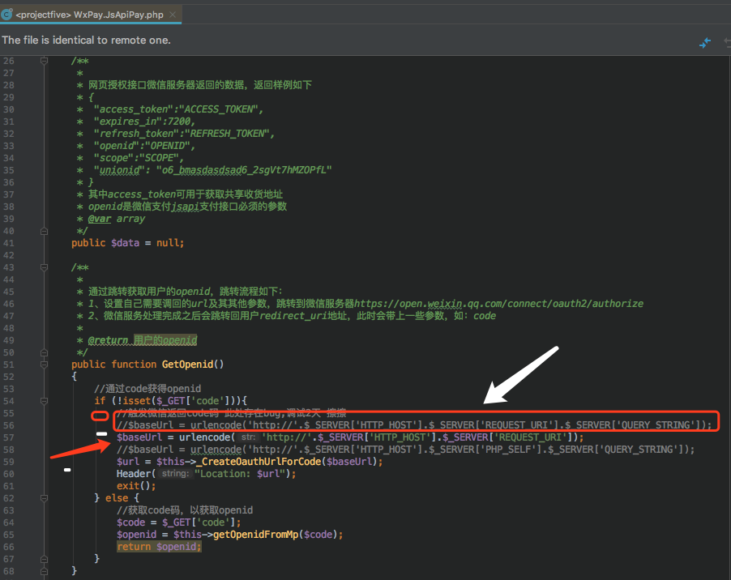

支付完成后，微信会把相关支付结果和用户信息发送给商户，商户需要接收处理，并返回应答。
对后台通知交互时，如果微信收到商户的应答不是成功或超时，微信认为通知失败，微信会通过一定的策略定期重新发起通知，尽可能提高通知的成功率，但微信不保证通知最终能成功。 （通知频率为15/15/30/180/1800/1800/1800/1800/3600，单位：秒）
注意：同样的通知可能会多次发送给商户系统。商户系统必须能够正确处理重复的通知。
推荐的做法是，当收到通知进行处理时，首先检查对应业务数据的状态，判断该通知是否已经处理过，如果没有处理过再进行处理，如果处理过直接返回结果成功。在对业务数据进行状态检查和处理之前，要采用数据锁进行并发控制，以避免函数重入造成的数据混乱。
特别提醒：商户系统对于支付结果通知的内容一定要做签名验证,并校验返回的订单金额是否与商户侧的订单金额一致，防止数据泄漏导致出现“假通知”，造成资金损失。
微信支付回调处理分为
1.同步
2.异步
这里微信官方推荐使用 第二种
php对微信回调异步处理
微信无论是微信内置JSAPI支付、H5外部浏览器支付、扫码支付，都需要通过异步回调接收支付结果。
本文简介如何获取微信支付通知。
仅需要一个在之前设置好的回调地址的方法里写上如下：
//处理微信支付回调
public function notify(){
$testxml = file_get_contents("php://input");
$jsonxml = json_encode(simplexml_load_string($testxml, 'SimpleXMLElement', LIBXML_NOCDATA));
$result = json_decode($jsonxml, true);//转成数组，
if($result){
//如果成功返回了
$out_trade_no = $result['out_trade_no'];
if($result['return_code'] == 'SUCCESS' && $result['result_code'] == 'SUCCESS'){
//执行业务逻辑改变订单状态等操作
//查询创建订单表 where("out_trade_no='".$out_trade_no."' and status=1") status为1表示待支付状态 1 待支付
//查询出来有该订单 就改变支付状态 status=2 2表示支付成功
}
}
}对后台通知交互时，如果微信收到商户的应答不是成功或超时，微信认为通知失败，
微信会通过一定的策略定期重新发起通知，尽可能提高通知的成功率，但微信不保证通知最终能成功。
（通知频率为15/15/30/180/1800/1800/1800/1800/3600，单位：秒）
结束微信重新通知用代码：echo 'SUCCESS';
附上：
微信支付返回的xml转化为json格式如下：
{
"appid": "12345",
"attach": "pay",
"bank_type": "CFT",
"cash_fee": "1",
"fee_type": "CNY",
"is_subscribe": "Y",
"mch_id": "12345",
"nonce_str": "dZYFpaDYRpF5rwhv",
"openid": "onhwF1hiutUySKCsrV21A6MCtT5Q",
"out_trade_no": "SH201808222055598628",
"result_code": "SUCCESS",
"return_code": "SUCCESS",
"sign": "5A019F52BEF1C3A98AE0F1FF29D01574",
"time_end": "20180822205606",
"total_fee": "1",
"trade_type": "MWEB",
"transaction_id": "4200000171201808221550954201"
}其中
"result_code": "SUCCESS",
"return_code": "SUCCESS",是判断用户是否已经支付的依据


因为微信在后台通知交互时，如果微信收到商户的应答不符合规范或超时，微信会判定本次通知失败，重新发送通知，直到成功为止（在通知一直不成功的情况下，微信总共会发起10次通知，每次通知时间距离最近一次的间隔为15/15/30/180/1800/1800/1800/1800/3600，单位：秒），但微信不保证通知最终一定能成功。
所以进来回调方法就要判断这笔订单在我们后台数据库是否支付成功了！
php对微信回调异步处理
微信无论是微信内置JSAPI支付、H5外部浏览器支付、扫码支付，都需要通过异步回调接收支付结果。
本文简介如何获取微信支付通知。
仅需要一个在之前设置好的回调地址的方法里写上如下：
//处理微信支付回调
public function notify(){
$testxml = file_get_contents("php://input");
$jsonxml = json_encode(simplexml_load_string($testxml, 'SimpleXMLElement', LIBXML_NOCDATA));
$result = json_decode($jsonxml, true);//转成数组，
if($result){
//如果成功返回了
$out_trade_no = $result['out_trade_no'];
if($result['return_code'] == 'SUCCESS' && $result['result_code'] == 'SUCCESS'){
//执行业务逻辑改变订单状态等操作
//查询创建订单表 where("out_trade_no='".$out_trade_no."' and status=1") status为1表示待支付状态 1 待支付
//查询出来有该订单 就改变支付状态 status=2 2表示支付成功
}
}
}
需要特别注意的地方：微信支付结果通知，会按一定规则重复发送通知，因此执行业务逻辑之前，需要判断是否是重复通知。
如果自己的业务逻辑执行成功后，可以return一个规定格式的XML，来告诉微信你已成功收到通知，并做好了相应处理。（当然不return也行。。。做好重复验证机制就好）
以下是自己实际项目中的处理支付回调的详细流程，不完善（比如并发问题没处理），大家有更好的建议欢迎提出来以使得处理逻辑更严密
（自己处理过程中遇到一些关于jsapi的demo的小问题，在下面给大家罗列出来）
public function wycz(){//我要充值
if(session('uid') ==NULL || session('uid') == "" || session('uid') == false){
//没有登录 跳转到登录页
$this->redirect('/Login/login');exit;
}else {
//接受参数
if($_POST){
$Total_fee = trim(I("post.fotal_fee"));
if(!empty($Total_fee)){
if($Total_fee<=0){
//提示输入正整数金额
$arr['code'] = "301";
$arr['msg'] = "输入正整数";
echo json_encode($arr);exit();
}else{
session("total_fee",$Total_fee);
$arr['code'] = "200";
$arr['msg'] = "确认充值吗？";
echo json_encode($arr);exit();
}
}else{
//提示输入正整数金额
$arr['code'] = "302";
$arr['msg'] = "输入充值金额";
echo json_encode($arr);exit();
}
}
$this->display();
}
}
//充值确认页面
public function confirmPay(){
if(session('uid') ==NULL || session('uid') == "" || session('uid') == false){
//没有登录 跳转到登录页
$this->redirect('/Login/login');exit;
}else {
$result = $this->wapPay();
$this->assign('jsApiParameters',$result['jsApiParameters']);
$this->assign('editAddress', $result['editAddress']);
$this->display();
}
}
//操作充值
public function wapPAy($Total_fee)
{
/**
*
* example目录下为简单的支付样例，仅能用于搭建快速体验微信支付使用
* 样例的作用仅限于指导如何使用sdk，在安全上面仅做了简单处理， 复制使用样例代码时请慎重
* 请勿直接直接使用样例对外提供服务
*
**/
Vendor('Wxpaysdk.lib.WxPay#Api');
Vendor('Wxpaysdk.example.WxPay#JsApiPay');
// Vendor('Wxpaysdk.example.WxPay#Config');
//①、获取用户openid
$tools = new \JsApiPay();
$openId = $tools->GetOpenid();
$Total_fee = session("total_fee")*100;
//$Total_fee = session("total_fee");
//②、统一下单
$input = new \WxPayUnifiedOrder();
$input->SetBody("vip充值");
$input->SetAttach("vip充值");
$input->SetOut_trade_no("klkq".date("YmdHis"));
$input->SetTotal_fee($Total_fee);
$input->SetTime_start(date("YmdHis"));
$input->SetTime_expire(date("YmdHis", time() + 600));
$input->SetGoods_tag("vip充值");
//$input->SetNotify_url("http://paysdk.weixin.qq.com/notify.php");
$input->SetNotify_url("http://wap.yuming.com/Member/notify");
$input->SetTrade_type("JSAPI");
$input->SetOpenid($openId);
$config = new \WxPayConfig();
$order = \WxPayApi::unifiedOrder($config, $input);
//echo '<font color="#f00"><b>统一下单支付单信息</b></font><br/>';
//printf_info($order);
$jsApiParameters = $tools->GetJsApiParameters($order);
//获取共享收货地址js函数参数
$editAddress = $tools->GetEditAddressParameters();
$data['jsApiParameters'] = $jsApiParameters;
$data['editAddress'] = $editAddress;
//写入订单表对应数据
$arr = array(
'w_mId'=>session('uid'),
'w_openid'=>$openId,
'w_title'=>'vip充值',
'w_time_create'=>date("YmdHis"),
'w_times_create'=>date("Y-m-d H:i:s"),
'w_out_trade_no'=>"klkq".date("YmdHis"),
);
M('wxpay_order')->add($arr);
return $data;
}
//处理微信支付回调
public function notify(){
$testxml = file_get_contents("php://input");
$jsonxml = json_encode(simplexml_load_string($testxml,'SimpleXMLElement',LIBXML_NOCDATA));
$result = json_decode($jsonxml,true);
if($result){
$out_trade_no = $result['out_trade_no'];
if($result['return_code'] == 'SUCCESS' && $result['result_code'] =='SUCCESS'){
//先判断订单状态是否已经改变
$orderData = M("wxpay_order")->where("w_out_trade_no='".$result['out_trade_no']."' and w_status=1")->find();
if(!empty($orderData)){
//支付成功改变支付状态
$arr = array(
'w_id'=>$orderData['w_id'],
'w_openid'=>$result['openid'],
'w_transaction_id'=>$result['transaction_id'],
'w_time_end'=>$result['time_end'],
'w_times_end'=>$result['time_end'],
'w_total_fee'=>$result['total_fee']/100,
'w_status'=>2,//支付成功 1 待支付 2支付成功 3 支付失败
);
M('wxpay_order')->save($arr);
//操作积分
$uid = $orderData['w_mId'];
//对该人增加$result['total_fee']积分
$zz_grade = M('grade');
$g_Integral = $zz_grade->where("g_mId=".$uid)->getField('g_Integral');
$zz_grade->g_Integral = $g_Integral + intval($result['total_fee']/100);
//更新积分
$giddd = $zz_grade->where("g_mId=".$uid)->save();
//操作积分日志表
$zz_grade_log = M('grade_log');
$zz_grade_log->g_gContent = '充值'.intval($result['total_fee']/100).'积分';
$zz_grade_log->g_mId = $uid;//邀请者会员id
$zz_grade_log->g_gNum = intval($result['total_fee']/100);//充值积分
$zz_grade_log->g_gDate = date('Y-m-d');//注册日期
$zz_grade_log->g_gTime = date('Y-m-d H:i:s');//注册时间
//写入数据库
$liddd = $zz_grade_log->add();
}
}
}
}
以下是关于微信jsapi的demo出现的小问题：
1、WxPay.Config
官方demo用的是require_once引入，如下图

你如果用Vendor引入就会报WxPay.Config.php被重复引用的错误，所以这里根据你的实际情况是完全按照demo写，还是变通下
这里是放在thinkphp3.2框架下接入微信支付的，所以这里实例化类 就要在 前面加 \

2、如果在类文件里发现进入不正确，建议采取如下引入方式
a、定义根目录常量

b、绝对路径引入文件

3、WxPay.JsApiPay.php文件里授权获取openid问题

图中红框白箭头是官方demo给的，但是在我的这个场景中不合适，总是造出这样的url http://wap.abc.com/index.php/Member/cz.htmls=/Member/cz.html?callback=.....
程序报非法访问cz.htmls，当我用红箭头指定的那个便是成功的获取正确的url，获取openid便是成功的。
情况不止于此：下面是对
$_SERVER['HTTP_HOST'].$_SERVER['REQUEST_URI'].$_SERVER['QUERY_STRING']
的搜索结果如下：$_SERVER['HTTP_HOST']：获取当前域名$_SERVER['REQUEST_URI']：这是取得当前URL的 路径地址 比如: http://zhidao.baidu.com/question/469321857.html?push=core&group=1 他获得是这个路径 question/469321857.html?push=core&group=1$_SERVER['QUERY_STRING']：获取的是?后面的值上述问题解决完，支付流程就可以走通了
延伸：
相同点：
当满足以下三个条件时，两者会输出相同信息。
1. 服务器为80端口
2. apache的conf中ServerName设置正确
3. HTTP/1.1协议规范
不同点：
1. 通常情况：
_SERVER["HTTP_HOST"] 在HTTP/1.1协议规范下，会根据客户端的HTTP请求输出信息。
_SERVER["SERVER_NAME"] 默认情况下直接输出apache的配置文件httpd.conf中的ServerName值。
2. 当服务器为非80端口时：
_SERVER["HTTP_HOST"] 会输出端口号，例如：mimiz.cn:8080
_SERVER["SERVER_NAME"] 会直接输出ServerName值
因此在这种情况下，可以理解为：HTTP_HOST = SERVER_NAME : SERVER_PORT
3. 当配置文件httpd.conf中的ServerName与HTTP/1.0请求的域名不一致时：
httpd.conf配置如下：
<virtualhost *>
ServerName mimiz.cn
ServerAlias www.mimiz.cn
</virtualhost>
客户端访问域名www.mimiz.cn
_SERVER["HTTP_HOST"] 输出 www.mimiz.cn
_SERVER["SERVER_NAME"] 输出 mimiz.cn
所以，在实际程序中，应尽量使用_SERVER["HTTP_HOST"] ，比较保险和可靠。